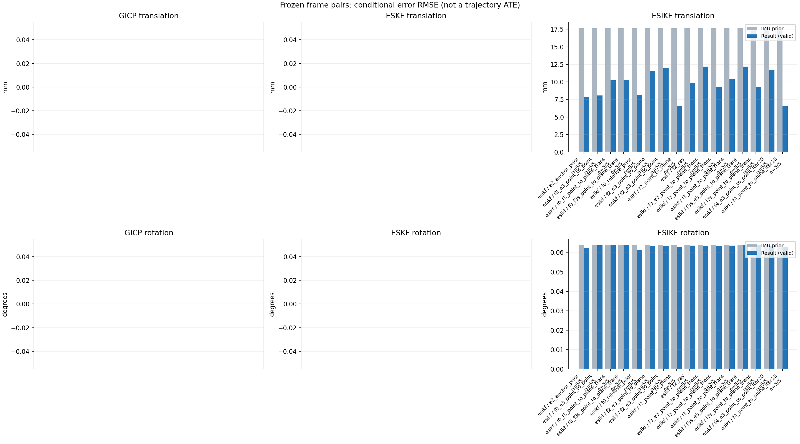

20261015_112845_yaw_left · depth=disparity_cache · cache=05aca34fc0ffd9325af0
模型视差：/home/ubuntu22/slam/SIO_SLAM/models/tensorrt/disp_896x448_fp16.plan；engine SHA256=604cf6ac1f705c877260711730dd5d2d58c2a21f3020c03c668401ef7fb1e768。输入为生产裁剪与光照处理后的 RGB 0..255；此实验使用原始浮点像素视差，不应用完整前端的邻域视差后处理。
原始 ONNX SHA256：e9f49736a65d68d06681add463866b6defdf78fdd7f4f50f6cc941b682fdc0bc。
代价体图改写验证：ONNX Runtime 固定随机特征输入，最大绝对误差 0；该项检查图改写，完整模型精度仍需由录制数据评估。
配准代码版本：744ac2d993ae629b0cc44a3b1d995e04ab4fad48；观测生成版本：744ac2d993ae629b0cc44a3b1d995e04ab4fad48。
固定图像对与纯 IMU 先验；ESKF 回放固定 GICP 观测，ESIKF 直接读取点云。真值只用于此报告。
同时查看 converged 与 solver_status：上游默认 Stereo 在 max_iter / stopped_at_minimum 时也可能置 converged=true。valid 表示输入检查通过，不表示精度提升。欧氏 GICP 未提供独立的点距 RMSE，该列显示 NaN。
误差按每对图像的锚点计算，单位 m / degrees。此处 RMSE 不是全序列 ATE；末帧受同一锚点条件约束。NIS 与条件马氏距离是诊断量，少量相关图像对不能用于宣称协方差已校准。
全部指标 CSV · R / P 矩阵 CSV · Stereo 求解逐轮 CSV · ESIKF 逐轮轨迹 CSV · 末轮 H / R / K_pose 矩阵 CSV · 配置快照 · 矢量图
unflagged 排除纯惯性先验平移误差超过 50 mm 的图像对；whitened 为误差按协方差白化后的每自由度均值，协方差与实际误差相符时约为 1。prior_whitened 用真值误差只检验先验 P；NIS 为 ESIKF 首轮 rᵀ(P+R)⁻¹r，不用真值，检验的是 P+R 的总量，单靠它分不开 P 与 R，偏差、错误对应和线性化误差也会抬高它。观测方差超过先验方差 1e+04 倍的方向视为不可观，从 NIS 及其自由度中去掉（nis_dof）。一致时 nis_per_dof 均值约 1、nis_over_chi2_median 中位数约 1；帧对少且共享序列，超出 95% 分位的比例只作参考。
| stage | method | variant | valid | total | result_translation_rmse_m | result_rotation_rmse_deg | result_translation_median_m | result_rotation_median_deg | result_translation_rmse_unflagged_m | result_rotation_rmse_unflagged_deg | improved_translation | improved_rotation | posterior_whitened_by_P_rot_mean | posterior_whitened_by_P_trans_mean | prior_whitened_by_P_rot_mean | prior_whitened_by_P_trans_mean | nis_per_dof_mean | nis_over_chi2_median_median | nis_exceeds_chi2_95_fraction |
|---|---|---|---|---|---|---|---|---|---|---|---|---|---|---|---|---|---|---|---|
| esikf | esikf | e2_anchor_prior | 5 | 5 | 0.0078248 | 0.06239 | 0.0063675 | 0.010382 | 0.0078248 | 0.06239 | 2 | 3 | 243.44 | 201.77 | 230.79 | 4.0236 | 12.169 | 4.5514 | 1 |
| esikf | esikf | f0_e3_point_to_point | 5 | 5 | 0.0080603 | 0.063685 | 0.0053484 | 0.010061 | 0.0080603 | 0.063685 | 2 | 3 | 98.804 | 2.7405 | 98.466 | 0.032828 | 0.043085 | 0.033599 | 0 |
| esikf | esikf | f0_f3_point_to_plane_trans | 5 | 5 | 0.010254 | 0.063702 | 0.0071327 | 0.010029 | 0.010254 | 0.063702 | 2 | 5 | 98.691 | 43.778 | 98.466 | 0.032828 | 0.75675 | 0.090854 | 0.2 |
| esikf | esikf | f0_f3s_point_to_plane_trans | 5 | 5 | 0.01028 | 0.063724 | 0.0071714 | 0.010052 | 0.01028 | 0.063724 | 2 | 0 | 98.466 | 43.512 | 98.466 | 0.032828 | 0.75675 | 0.090854 | 0.2 |
| esikf | esikf | f0_relative_prior | 5 | 5 | 0.0081916 | 0.061385 | 0.0070581 | 0.012049 | 0.0081916 | 0.061385 | 2 | 3 | 105.45 | 202.44 | 98.466 | 0.032828 | 10.047 | 3.6456 | 0.8 |
| esikf | esikf | f2_e3_point_to_plane | 5 | 5 | 0.011601 | 0.06332 | 0.0034507 | 0.01004 | 0.011601 | 0.06332 | 2 | 3 | 234.32 | 3.6795 | 230.79 | 4.0236 | 0.81251 | 0.20528 | 0.2 |
| esikf | esikf | f2_e3_point_to_point | 5 | 5 | 0.012005 | 0.063374 | 0.0035425 | 0.01003 | 0.012005 | 0.063374 | 3 | 3 | 236.1 | 7.9842 | 230.79 | 4.0236 | 0.19602 | 0.095451 | 0 |
| esikf | esikf | f2_point_to_plane | 5 | 5 | 0.0066154 | 0.062855 | 0.0013264 | 0.0096297 | 0.0066154 | 0.062855 | 2 | 4 | 235.74 | 19.639 | 230.79 | 4.0236 | 5.9193 | 4.8536 | 0.8 |
| esikf | esikf | f2_ray | 5 | 5 | 0.0098813 | 0.063427 | 0.0056126 | 0.010087 | 0.0098813 | 0.063427 | 2 | 3 | 237.52 | 22.641 | 230.79 | 4.0236 | 3.9259 | 6.6525 | 0.8 |
| esikf | esikf | f3_e3_point_to_plane_trans | 5 | 5 | 0.01216 | 0.063399 | 0.003499 | 0.010055 | 0.01216 | 0.063399 | 2 | 3 | 234.31 | 3.9204 | 230.79 | 4.0236 | 1.157 | 0.54082 | 0.2 |
| esikf | esikf | f3_point_to_plane_trans | 5 | 5 | 0.0093064 | 0.063306 | 0.0053382 | 0.010123 | 0.0093064 | 0.063306 | 2 | 3 | 236.76 | 39.174 | 230.79 | 4.0236 | 11.117 | 10.389 | 0.8 |
| esikf | esikf | f3_point_to_point_trans | 5 | 5 | 0.010451 | 0.063482 | 0.0051681 | 0.0095588 | 0.010451 | 0.063482 | 2 | 4 | 237.96 | 422.27 | 230.79 | 4.0236 | 8.6981 | 4.7516 | 0.6 |
| esikf | esikf | f3s_e3_point_to_plane_trans | 5 | 5 | 0.012167 | 0.063724 | 0.003499 | 0.010052 | 0.012167 | 0.063724 | 2 | 0 | 230.79 | 3.9233 | 230.79 | 4.0236 | 1.157 | 0.54082 | 0.2 |
| esikf | esikf | f3s_point_to_plane_trans | 5 | 5 | 0.0093117 | 0.063724 | 0.0052315 | 0.010052 | 0.0093117 | 0.063724 | 2 | 0 | 230.79 | 39.176 | 230.79 | 4.0236 | 11.117 | 10.389 | 0.8 |
| esikf | esikf | f4_e3_point_to_point_iter20 | 5 | 5 | 0.011713 | 0.063327 | 0.0035425 | 0.01003 | 0.011713 | 0.063327 | 3 | 3 | 235.9 | 7.6829 | 230.79 | 4.0236 | 0.19602 | 0.095451 | 0 |
| esikf | esikf | f4_point_to_plane_iter20 | 5 | 5 | 0.0066154 | 0.062855 | 0.0013264 | 0.0096297 | 0.0066154 | 0.062855 | 2 | 4 | 235.74 | 19.639 | 230.79 | 4.0236 | 5.9193 | 4.8536 | 0.8 |

| stage | case | method | variant | status | solver_status | inliers | converged | covariance_convention | covariance_from_hessian | fitness | registration_rmse_m | prior_trans_error_m | result_trans_error_m | prior_rot_error_deg | result_rot_error_deg | prior_flagged | R_rot_trace_rad2 | R_pos_trace_m2 | nis_regularized | posterior_whitened_by_P_rot | posterior_whitened_by_P_trans | prior_whitened_by_P_rot | prior_whitened_by_P_trans | nis_per_dof | nis_dof |
|---|---|---|---|---|---|---|---|---|---|---|---|---|---|---|---|---|---|---|---|---|---|---|---|---|---|
| esikf | static_start | esikf | e2_anchor_prior | updated | converged | 23376 | 1 | 1 | 0 | 0 | 7.8303e-05 | 0.00077501 | 0.0034263 | 0.0030956 | 0 | 4.4451e-08 | 8.4842e-07 | nan | 2.8264 | 4.8817 | 3.3015 | 0.021844 | 4.0569 | 6 | |
| esikf | static_start | esikf | f0_relative_prior | updated | converged | 23390 | 1 | 1 | 0 | 0 | 7.8303e-05 | 0.0023015 | 0.0034263 | 0.0026554 | 0 | 4.4311e-08 | 8.3971e-07 | nan | 2.1537 | 14.579 | 3.0211 | 0.00080352 | 1.9696 | 6 | |
| esikf | static_start | esikf | f2_point_to_plane | updated | converged | 23377 | 1 | 1 | 0 | 0 | 7.8303e-05 | 0.0002831 | 0.0034263 | 0.0033984 | 0 | 5.2345e-07 | 4.9297e-06 | nan | 3.3911 | 0.31618 | 3.3015 | 0.021844 | 4.3263 | 6 | |
| esikf | static_start | esikf | f2_ray | updated | converged | 23378 | 1 | 1 | 0 | 0 | 7.8303e-05 | 0.00040162 | 0.0034263 | 0.0034101 | 0 | 0.040219 | 4.1035e-05 | nan | 3.2789 | 0.66126 | 3.3015 | 0.021844 | 5.2466 | 3 | |
| esikf | static_start | esikf | f3_point_to_point_trans | updated | converged | 23372 | 1 | 1 | 0 | 0 | 7.8303e-05 | 0.0017891 | 0.0034263 | 0.0034131 | 0 | 0.044619 | 8.576e-07 | nan | 3.2838 | 29.935 | 3.3015 | 0.021844 | 11.39 | 3 | |
| esikf | static_start | esikf | f3_point_to_plane_trans | updated | converged | 23376 | 1 | 1 | 0 | 0 | 7.8303e-05 | 0.00089343 | 0.0034263 | 0.0034215 | 0 | 0.52414 | 4.9379e-06 | nan | 3.2954 | 3.6222 | 3.3015 | 0.021844 | 12.247 | 3 | |
| esikf | static_start | esikf | f0_f3_point_to_plane_trans | updated_not_converged | max_iterations | 23367 | 0 | 1 | 0 | 0 | 7.8303e-05 | 0.0028372 | 0.0034263 | 0.0034189 | 0 | 0.52506 | 5.0199e-06 | nan | 3.012 | 8.8829 | 3.0211 | 0.00080352 | 3.1712 | 3 | |
| esikf | static_start | esikf | f3s_point_to_plane_trans | updated | converged | 23376 | 1 | 1 | 0 | 0 | 7.8303e-05 | 0.00089343 | 0.0034263 | 0.0034263 | 0 | 0.52414 | 4.9379e-06 | nan | 3.3015 | 3.6222 | 3.3015 | 0.021844 | 12.247 | 3 | |
| esikf | static_start | esikf | f0_f3s_point_to_plane_trans | updated_not_converged | max_iterations | 23368 | 0 | 1 | 0 | 0 | 7.8303e-05 | 0.0028703 | 0.0034263 | 0.0034263 | 0 | 0.52519 | 5.0195e-06 | nan | 3.0211 | 9.1008 | 3.0211 | 0.00080352 | 3.1712 | 3 | |
| esikf | static_start | esikf | f4_point_to_plane_iter20 | updated | converged | 23377 | 1 | 1 | 0 | 0 | 7.8303e-05 | 0.0002831 | 0.0034263 | 0.0033984 | 0 | 5.2345e-07 | 4.9297e-06 | nan | 3.3911 | 0.31618 | 3.3015 | 0.021844 | 4.3263 | 6 | |
| esikf | static_start | esikf | f2_e3_point_to_point | updated | converged | 23377 | 1 | 1 | 0 | 0 | 7.8303e-05 | 6.9925e-05 | 0.0034263 | 0.0034343 | 0 | 4.9394e-06 | 7.0443e-05 | nan | 3.3107 | 0.017719 | 3.3015 | 0.021844 | 0.08508 | 6 | |
| esikf | static_start | esikf | f0_e3_point_to_point | updated | converged | 23377 | 1 | 1 | 0 | 0 | 7.8303e-05 | 0.00031087 | 0.0034263 | 0.0034301 | 0 | 4.9391e-06 | 7.0435e-05 | nan | 3.0262 | 0.026473 | 3.0211 | 0.00080352 | 0.070553 | 6 | |
| esikf | static_start | esikf | f2_e3_point_to_plane | updated | converged | 23377 | 1 | 1 | 0 | 0 | 7.8303e-05 | 8.2894e-05 | 0.0034263 | 0.003429 | 0 | 3.0596e-05 | 0.00017703 | nan | 3.3074 | 0.024521 | 3.3015 | 0.021844 | 0.077107 | 3 | |
| esikf | static_start | esikf | f3_e3_point_to_plane_trans | updated | converged | 23377 | 1 | 1 | 0 | 0 | 7.8303e-05 | 8.6161e-05 | 0.0034263 | 0.0034262 | 0 | 0.52364 | 0.00017703 | nan | 3.3015 | 0.026511 | 3.3015 | 0.021844 | 0.42653 | 3 | |
| esikf | static_start | esikf | f3s_e3_point_to_plane_trans | updated | converged | 23377 | 1 | 1 | 0 | 0 | 7.8303e-05 | 8.6161e-05 | 0.0034263 | 0.0034263 | 0 | 0.52364 | 0.00017703 | nan | 3.3015 | 0.026511 | 3.3015 | 0.021844 | 0.42653 | 3 | |
| esikf | static_start | esikf | f4_e3_point_to_point_iter20 | updated | converged | 23377 | 1 | 1 | 0 | 0 | 7.8303e-05 | 6.9925e-05 | 0.0034263 | 0.0034343 | 0 | 4.9394e-06 | 7.0443e-05 | nan | 3.3107 | 0.017719 | 3.3015 | 0.021844 | 0.08508 | 6 | |
| esikf | sync_motion | esikf | e2_anchor_prior | updated | converged | 23333 | 1 | 1 | 0 | 0 | 0.00039414 | 0.0027696 | 0.010052 | 0.010382 | 0 | 4.7944e-08 | 8.6611e-07 | nan | 40.501 | 60.783 | 33.972 | 0.29009 | 11.726 | 6 | |
| esikf | sync_motion | esikf | f0_relative_prior | updated_not_converged | max_iterations | 23365 | 0 | 1 | 0 | 0 | 0.00039414 | 0.0050745 | 0.010052 | 0.012049 | 0 | 4.751e-08 | 8.4694e-07 | nan | 40.437 | 130.68 | 28.391 | 0.0010023 | 3.8613 | 6 | |
| esikf | sync_motion | esikf | f2_point_to_plane | updated | converged | 23305 | 1 | 1 | 0 | 0 | 0.00039414 | 0.0012414 | 0.010052 | 0.0096297 | 0 | 5.3546e-07 | 4.7646e-06 | nan | 32.181 | 5.4209 | 33.972 | 0.29009 | 12.977 | 6 | |
| esikf | sync_motion | esikf | f2_ray | updated | converged | 23317 | 1 | 1 | 0 | 0 | 0.00039414 | 0.00048676 | 0.010052 | 0.010087 | 0 | 0.0084737 | 1.2912e-05 | nan | 34.537 | 0.58231 | 33.972 | 0.29009 | 5.9805 | 3 | |
| esikf | sync_motion | esikf | f3_point_to_point_trans | updated | converged | 23371 | 1 | 1 | 0 | 0 | 0.00039414 | 0.0062376 | 0.010052 | 0.0095588 | 0 | 0.04752 | 8.4825e-07 | nan | 32.39 | 331.16 | 33.972 | 0.29009 | 27.053 | 3 | |
| esikf | sync_motion | esikf | f3_point_to_plane_trans | updated | converged | 23314 | 1 | 1 | 0 | 0 | 0.00039414 | 0.0017026 | 0.010052 | 0.010123 | 0 | 0.53619 | 4.7333e-06 | nan | 34.701 | 10.548 | 33.972 | 0.29009 | 29.08 | 3 | |
| esikf | sync_motion | esikf | f0_f3_point_to_plane_trans | updated_not_converged | max_iterations | 23388 | 0 | 1 | 0 | 0 | 0.00039414 | 0.0071327 | 0.010052 | 0.010029 | 0 | 0.53381 | 4.5912e-06 | nan | 28.356 | 29.773 | 28.391 | 0.0010023 | 0.5086 | 3 | |
| esikf | sync_motion | esikf | f3s_point_to_plane_trans | updated | converged | 23315 | 1 | 1 | 0 | 0 | 0.00039414 | 0.0017065 | 0.010052 | 0.010052 | 0 | 0.53621 | 4.734e-06 | nan | 33.972 | 10.595 | 33.972 | 0.29009 | 29.08 | 3 | |
| esikf | sync_motion | esikf | f0_f3s_point_to_plane_trans | updated | converged | 23386 | 1 | 1 | 0 | 0 | 0.00039414 | 0.0071714 | 0.010052 | 0.010052 | 0 | 0.53396 | 4.5905e-06 | nan | 28.391 | 30.361 | 28.391 | 0.0010023 | 0.5086 | 3 | |
| esikf | sync_motion | esikf | f4_point_to_plane_iter20 | updated | converged | 23305 | 1 | 1 | 0 | 0 | 0.00039414 | 0.0012414 | 0.010052 | 0.0096297 | 0 | 5.3546e-07 | 4.7646e-06 | nan | 32.181 | 5.4209 | 33.972 | 0.29009 | 12.977 | 6 | |
| esikf | sync_motion | esikf | f2_e3_point_to_point | updated | converged | 23334 | 1 | 1 | 0 | 0 | 0.00039414 | 0.00039915 | 0.010052 | 0.01003 | 0 | 5.3217e-06 | 7.19e-05 | nan | 33.956 | 0.30273 | 33.972 | 0.29009 | 0.40037 | 5 | |
| esikf | sync_motion | esikf | f0_e3_point_to_point | updated | converged | 23368 | 1 | 1 | 0 | 0 | 0.00039414 | 0.0042221 | 0.010052 | 0.010061 | 0 | 5.304e-06 | 7.1189e-05 | nan | 28.502 | 1.4811 | 28.391 | 0.0010023 | 0.083581 | 6 | |
| esikf | sync_motion | esikf | f2_e3_point_to_plane | updated | converged | 23334 | 1 | 1 | 0 | 0 | 0.00039414 | 0.00039735 | 0.010052 | 0.01004 | 0 | 3.1231e-05 | 0.00017188 | nan | 33.929 | 0.30024 | 33.972 | 0.29009 | 0.58742 | 3 | |
| esikf | sync_motion | esikf | f3_e3_point_to_plane_trans | updated | converged | 23334 | 1 | 1 | 0 | 0 | 0.00039414 | 0.00039726 | 0.010052 | 0.010055 | 0 | 0.53449 | 0.00017188 | nan | 34.001 | 0.3016 | 33.972 | 0.29009 | 1.0991 | 3 | |
| esikf | sync_motion | esikf | f3s_e3_point_to_plane_trans | updated | converged | 23334 | 1 | 1 | 0 | 0 | 0.00039414 | 0.00039726 | 0.010052 | 0.010052 | 0 | 0.53449 | 0.00017188 | nan | 33.972 | 0.3016 | 33.972 | 0.29009 | 1.0991 | 3 | |
| esikf | sync_motion | esikf | f4_e3_point_to_point_iter20 | updated | converged | 23334 | 1 | 1 | 0 | 0 | 0.00039414 | 0.00039915 | 0.010052 | 0.01003 | 0 | 5.3217e-06 | 7.19e-05 | nan | 33.956 | 0.30273 | 33.972 | 0.29009 | 0.40037 | 5 | |
| esikf | main_motion | esikf | e2_anchor_prior | updated | converged | 17544 | 1 | 1 | 0 | 0 | 0.0033198 | 0.0063675 | 0.017216 | 0.017169 | 0 | 1.0666e-07 | 1.0708e-06 | nan | 121.15 | 111.43 | 119.55 | 1.663 | 3.4657 | 6 | |
| esikf | main_motion | esikf | f0_relative_prior | updated_not_converged | max_iterations | 17576 | 0 | 1 | 0 | 0 | 0.0033198 | 0.0070581 | 0.017216 | 0.017375 | 0 | 1.0583e-07 | 1.0585e-06 | nan | 90.093 | 132.15 | 87.296 | 0.008526 | 3.2495 | 6 | |
| esikf | main_motion | esikf | f2_point_to_plane | updated | converged | 17561 | 1 | 1 | 0 | 0 | 0.0033198 | 0.0053255 | 0.017216 | 0.017035 | 0 | 7.9496e-07 | 4.1392e-06 | nan | 118.29 | 16.598 | 119.55 | 1.663 | 1.9331 | 6 | |
| esikf | main_motion | esikf | f2_ray | updated | converged | 17575 | 1 | 1 | 0 | 0 | 0.0033198 | 0.0056126 | 0.017216 | 0.017133 | 0 | 0.018266 | 1.6709e-05 | nan | 119.48 | 18.183 | 119.55 | 1.663 | 5.7233 | 3 | |
| esikf | main_motion | esikf | f3_point_to_point_trans | updated_not_converged | max_iterations | 17589 | 0 | 1 | 0 | 0 | 0.0033198 | 0.0051681 | 0.017216 | 0.017166 | 0 | 0.10474 | 1.036e-06 | nan | 120.6 | 132.24 | 119.55 | 1.663 | 1.2539 | 3 | |
| esikf | main_motion | esikf | f3_point_to_plane_trans | updated | converged | 17559 | 1 | 1 | 0 | 0 | 0.0033198 | 0.0063255 | 0.017216 | 0.016949 | 0 | 0.79106 | 4.0876e-06 | nan | 117.5 | 24.243 | 119.55 | 1.663 | 5.8869 | 3 | |
| esikf | main_motion | esikf | f0_f3_point_to_plane_trans | updated | converged | 17587 | 1 | 1 | 0 | 0 | 0.0033198 | 0.008745 | 0.017216 | 0.017204 | 0 | 0.79046 | 4.0306e-06 | nan | 87.307 | 28.974 | 87.296 | 0.008526 | 0.03147 | 3 | |
| esikf | main_motion | esikf | f3s_point_to_plane_trans | updated | converged | 17560 | 1 | 1 | 0 | 0 | 0.0033198 | 0.0063348 | 0.017216 | 0.017216 | 0 | 0.79096 | 4.0875e-06 | nan | 119.55 | 24.298 | 119.55 | 1.663 | 5.8869 | 3 | |
| esikf | main_motion | esikf | f0_f3s_point_to_plane_trans | updated_not_converged | max_iterations | 17583 | 0 | 1 | 0 | 0 | 0.0033198 | 0.0090511 | 0.017216 | 0.017216 | 0 | 0.79205 | 4.0063e-06 | nan | 87.296 | 30.995 | 87.296 | 0.008526 | 0.03147 | 3 | |
| esikf | main_motion | esikf | f4_point_to_plane_iter20 | updated | converged | 17561 | 1 | 1 | 0 | 0 | 0.0033198 | 0.0053255 | 0.017216 | 0.017035 | 0 | 7.9496e-07 | 4.1392e-06 | nan | 118.29 | 16.598 | 119.55 | 1.663 | 1.9331 | 6 | |
| esikf | main_motion | esikf | f2_e3_point_to_point | updated | converged | 17522 | 1 | 1 | 0 | 0 | 0.0033198 | 0.0035425 | 0.017216 | 0.017197 | 0 | 1.1869e-05 | 8.9492e-05 | nan | 119.56 | 2.28 | 119.55 | 1.663 | 0.044796 | 4 | |
| esikf | main_motion | esikf | f0_e3_point_to_point | updated | converged | 17540 | 1 | 1 | 0 | 0 | 0.0033198 | 0.0062933 | 0.017216 | 0.017211 | 0 | 1.1872e-05 | 8.9169e-05 | nan | 87.37 | 1.3356 | 87.296 | 0.008526 | 0.021765 | 5 | |
| esikf | main_motion | esikf | f2_e3_point_to_plane | updated | converged | 17525 | 1 | 1 | 0 | 0 | 0.0033198 | 0.0034507 | 0.017216 | 0.017205 | 0 | 4.6873e-05 | 0.00015153 | nan | 119.49 | 1.9561 | 119.55 | 1.663 | 0.1619 | 3 | |
| esikf | main_motion | esikf | f3_e3_point_to_plane_trans | updated | converged | 17528 | 1 | 1 | 0 | 0 | 0.0033198 | 0.003499 | 0.017216 | 0.017198 | 0 | 0.80027 | 0.00015101 | nan | 119.43 | 2.0363 | 119.55 | 1.663 | 0.37673 | 3 | |
| esikf | main_motion | esikf | f3s_e3_point_to_plane_trans | updated | converged | 17528 | 1 | 1 | 0 | 0 | 0.0033198 | 0.003499 | 0.017216 | 0.017216 | 0 | 0.80023 | 0.000151 | nan | 119.55 | 2.0363 | 119.55 | 1.663 | 0.37673 | 3 | |
| esikf | main_motion | esikf | f4_e3_point_to_point_iter20 | updated | converged | 17522 | 1 | 1 | 0 | 0 | 0.0033198 | 0.0035425 | 0.017216 | 0.017197 | 0 | 1.1869e-05 | 8.9492e-05 | nan | 119.56 | 2.28 | 119.55 | 1.663 | 0.044796 | 4 | |
| esikf | main_motion_long | esikf | e2_anchor_prior | updated_not_converged | max_iterations | 13006 | 0 | 1 | 0 | 0 | 0.025379 | 0.014197 | 0.14096 | 0.13791 | 0 | 1.5008e-07 | 1.1688e-06 | nan | 1040.8 | 598.27 | 988.69 | 2.7917 | 3.2115 | 6 | |
| esikf | main_motion_long | esikf | f0_relative_prior | updated_not_converged | max_iterations | 13004 | 0 | 1 | 0 | 0 | 0.025379 | 0.014301 | 0.14096 | 0.13551 | 0 | 1.5025e-07 | 1.1721e-06 | nan | 389.4 | 526.7 | 368.67 | 0.014213 | 3.0466 | 6 | |
| esikf | main_motion_long | esikf | f2_point_to_plane | updated | converged | 13005 | 1 | 1 | 0 | 0 | 0.025379 | 0.013677 | 0.14096 | 0.13902 | 0 | 1.1281e-06 | 4.3858e-06 | nan | 1012.2 | 74.755 | 988.69 | 2.7917 | 2.4934 | 6 | |
| esikf | main_motion_long | esikf | f2_ray | updated_not_converged | max_iterations | 13034 | 0 | 1 | 0 | 0 | 0.025379 | 0.020218 | 0.14096 | 0.14027 | 0 | 0.008756 | 7.8526e-06 | nan | 1018.1 | 75.922 | 988.69 | 2.7917 | 0.040365 | 3 | |
| esikf | main_motion_long | esikf | f3_point_to_point_trans | updated_not_converged | max_iterations | 13032 | 0 | 1 | 0 | 0 | 0.025379 | 0.021808 | 0.14096 | 0.14043 | 0 | 0.15229 | 1.2053e-06 | nan | 1020.7 | 1610.8 | 988.69 | 2.7917 | 0.046643 | 3 | |
| esikf | main_motion_long | esikf | f3_point_to_plane_trans | updated_not_converged | max_iterations | 13035 | 0 | 1 | 0 | 0 | 0.025379 | 0.018996 | 0.14096 | 0.14002 | 0 | 1.1186 | 4.4577e-06 | nan | 1016.4 | 136.54 | 988.69 | 2.7917 | 0.17722 | 3 | |
| esikf | main_motion_long | esikf | f0_f3_point_to_plane_trans | updated_not_converged | max_iterations | 13022 | 0 | 1 | 0 | 0 | 0.025379 | 0.019281 | 0.14096 | 0.14092 | 0 | 1.1202 | 4.4691e-06 | nan | 369.71 | 139.08 | 368.67 | 0.014213 | 0.00080059 | 3 | |
| esikf | main_motion_long | esikf | f3s_point_to_plane_trans | updated_not_converged | max_iterations | 13036 | 0 | 1 | 0 | 0 | 0.025379 | 0.019035 | 0.14096 | 0.14096 | 0 | 1.1204 | 4.4618e-06 | nan | 988.69 | 137.39 | 988.69 | 2.7917 | 0.17722 | 3 | |
| esikf | main_motion_long | esikf | f0_f3s_point_to_plane_trans | updated_not_converged | max_iterations | 13030 | 0 | 1 | 0 | 0 | 0.025379 | 0.019314 | 0.14096 | 0.14096 | 0 | 1.121 | 4.4735e-06 | nan | 368.67 | 138.54 | 368.67 | 0.014213 | 0.00080059 | 3 | |
| esikf | main_motion_long | esikf | f4_point_to_plane_iter20 | updated | converged | 13005 | 1 | 1 | 0 | 0 | 0.025379 | 0.013677 | 0.14096 | 0.13902 | 0 | 1.1281e-06 | 4.3858e-06 | nan | 1012.2 | 74.755 | 988.69 | 2.7917 | 2.4934 | 6 | |
| esikf | main_motion_long | esikf | f2_e3_point_to_point | updated_not_converged | max_iterations | 13004 | 0 | 1 | 0 | 0 | 0.025379 | 0.018694 | 0.14096 | 0.14016 | 0 | 1.696e-05 | 9.9964e-05 | nan | 1013.7 | 13.836 | 988.69 | 2.7917 | 0.031699 | 6 | |
| esikf | main_motion_long | esikf | f0_e3_point_to_point | updated_not_converged | max_iterations | 13013 | 0 | 1 | 0 | 0 | 0.025379 | 0.01545 | 0.14096 | 0.14088 | 0 | 1.6785e-05 | 9.8496e-05 | nan | 370.01 | 9.4189 | 368.67 | 0.014213 | 0.029948 | 6 | |
| esikf | main_motion_long | esikf | f2_e3_point_to_plane | updated_not_converged | max_iterations | 13033 | 0 | 1 | 0 | 0 | 0.025379 | 0.018354 | 0.14096 | 0.14004 | 0 | 6.6551e-05 | 0.00016197 | nan | 1005.1 | 5.4319 | 988.69 | 2.7917 | 0.063044 | 4 | |
| esikf | main_motion_long | esikf | f3_e3_point_to_plane_trans | updated | converged | 13024 | 1 | 1 | 0 | 0 | 0.025379 | 0.019875 | 0.14096 | 0.14022 | 0 | 1.1316 | 0.00016293 | nan | 1005.1 | 6.3215 | 988.69 | 2.7917 | 0.12127 | 3 | |
| esikf | main_motion_long | esikf | f3s_e3_point_to_plane_trans | updated_not_converged | max_iterations | 13024 | 0 | 1 | 0 | 0 | 0.025379 | 0.019922 | 0.14096 | 0.14096 | 0 | 1.13 | 0.00016298 | nan | 988.69 | 6.3516 | 988.69 | 2.7917 | 0.12127 | 3 | |
| esikf | main_motion_long | esikf | f4_e3_point_to_point_iter20 | updated | converged | 12977 | 1 | 1 | 0 | 0 | 0.025379 | 0.017753 | 0.14096 | 0.14006 | 0 | 1.6986e-05 | 0.00010027 | nan | 1012.8 | 12.338 | 988.69 | 2.7917 | 0.031699 | 6 | |
| esikf | static_end | esikf | e2_anchor_prior | updated_not_converged | max_iterations | 9131 | 0 | 1 | 0 | 0 | 0.03002 | 0.0074674 | 0.004953 | 0.0055363 | 0 | 1.4889e-07 | 8.9015e-07 | nan | 11.94 | 233.47 | 8.4503 | 15.351 | 38.384 | 6 | |
| esikf | static_end | esikf | f0_relative_prior | updated_not_converged | max_iterations | 9107 | 0 | 1 | 0 | 0 | 0.03002 | 0.0070801 | 0.004953 | 0.0047689 | 0 | 1.489e-07 | 8.8902e-07 | nan | 5.185 | 208.09 | 4.952 | 0.1396 | 38.109 | 6 | |
| esikf | static_end | esikf | f2_point_to_plane | updated | converged | 8743 | 1 | 1 | 0 | 0 | 0.03002 | 0.0013264 | 0.004953 | 0.0057316 | 0 | 1.0482e-06 | 3.7898e-06 | nan | 12.661 | 1.1065 | 8.4503 | 15.351 | 7.8662 | 6 | |
| esikf | static_end | esikf | f2_ray | updated_not_converged | max_iterations | 9031 | 0 | 1 | 0 | 0 | 0.03002 | 0.0068959 | 0.004953 | 0.0056185 | 0 | 0.0069075 | 8.7431e-06 | nan | 12.186 | 17.858 | 8.4503 | 15.351 | 2.6387 | 3 | |
| esikf | static_end | esikf | f3_point_to_point_trans | updated_not_converged | max_iterations | 8738 | 0 | 1 | 0 | 0 | 0.03002 | 0.0013205 | 0.004953 | 0.0057619 | 0 | 0.15376 | 9.3047e-07 | nan | 12.838 | 7.1877 | 8.4503 | 15.351 | 3.7475 | 3 | |
| esikf | static_end | esikf | f3_point_to_plane_trans | updated_not_converged | max_iterations | 8841 | 0 | 1 | 0 | 0 | 0.03002 | 0.0053382 | 0.004953 | 0.0055517 | 0 | 1.0006 | 3.5207e-06 | nan | 11.902 | 20.915 | 8.4503 | 15.351 | 8.1935 | 3 | |
| esikf | static_end | esikf | f0_f3_point_to_plane_trans | updated_not_converged | max_iterations | 8778 | 0 | 1 | 0 | 0 | 0.03002 | 0.0043017 | 0.004953 | 0.0047382 | 0 | 1.0333 | 3.7064e-06 | nan | 5.0719 | 12.185 | 4.952 | 0.1396 | 0.071654 | 3 | |
| esikf | static_end | esikf | f3s_point_to_plane_trans | updated_not_converged | max_iterations | 8861 | 0 | 1 | 0 | 0 | 0.03002 | 0.0052315 | 0.004953 | 0.004953 | 0 | 0.9962 | 3.5069e-06 | nan | 8.4503 | 19.972 | 8.4503 | 15.351 | 8.1935 | 3 | |
| esikf | static_end | esikf | f0_f3s_point_to_plane_trans | updated_not_converged | max_iterations | 8736 | 0 | 1 | 0 | 0 | 0.03002 | 0.0037085 | 0.004953 | 0.004953 | 0 | 1.0426 | 3.7245e-06 | nan | 4.952 | 8.5607 | 4.952 | 0.1396 | 0.071654 | 3 | |
| esikf | static_end | esikf | f4_point_to_plane_iter20 | updated | converged | 8743 | 1 | 1 | 0 | 0 | 0.03002 | 0.0013264 | 0.004953 | 0.0057316 | 0 | 1.0482e-06 | 3.7898e-06 | nan | 12.661 | 1.1065 | 8.4503 | 15.351 | 7.8662 | 6 | |
| esikf | static_end | esikf | f2_e3_point_to_point | updated_not_converged | max_iterations | 9185 | 0 | 1 | 0 | 0 | 0.03002 | 0.018932 | 0.004953 | 0.0052041 | 0 | 1.6839e-05 | 7.638e-05 | nan | 9.9235 | 23.485 | 8.4503 | 15.351 | 0.41818 | 4 | |
| esikf | static_end | esikf | f0_e3_point_to_point | updated_not_converged | max_iterations | 8813 | 0 | 1 | 0 | 0 | 0.03002 | 0.0053484 | 0.004953 | 0.0047572 | 0 | 1.6925e-05 | 7.57e-05 | nan | 5.1081 | 1.4406 | 4.952 | 0.1396 | 0.0095769 | 4 | |
| esikf | static_end | esikf | f2_e3_point_to_plane | updated | converged | 9199 | 1 | 1 | 0 | 0 | 0.03002 | 0.017998 | 0.004953 | 0.0051557 | 0 | 5.6052e-05 | 0.00012263 | nan | 9.7671 | 10.685 | 8.4503 | 15.351 | 3.1731 | 3 | |
| esikf | static_end | esikf | f3_e3_point_to_plane_trans | updated | converged | 9200 | 1 | 1 | 0 | 0 | 0.03002 | 0.018216 | 0.004953 | 0.0051295 | 0 | 0.96844 | 0.0001239 | nan | 9.6706 | 10.916 | 8.4503 | 15.351 | 3.7615 | 3 | |
| esikf | static_end | esikf | f3s_e3_point_to_plane_trans | updated | converged | 9201 | 1 | 1 | 0 | 0 | 0.03002 | 0.018189 | 0.004953 | 0.004953 | 0 | 0.96776 | 0.00012364 | nan | 8.4503 | 10.9 | 8.4503 | 15.351 | 3.7615 | 3 | |
| esikf | static_end | esikf | f4_e3_point_to_point_iter20 | updated | converged | 9175 | 1 | 1 | 0 | 0 | 0.03002 | 0.018922 | 0.004953 | 0.0051926 | 0 | 1.6874e-05 | 7.6532e-05 | nan | 9.8803 | 23.475 | 8.4503 | 15.351 | 0.41818 | 4 |